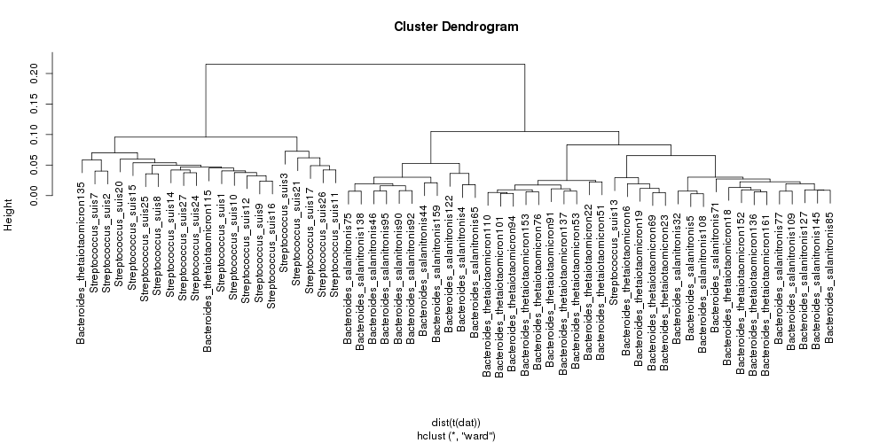

Clustering metagenomic contigs on tetranucleotide frequency¶
Metagenomic sequencing has become a widely used method for assessing the functional potential of microbial communities across a wide range of environments. Often the first step in a metagenomic analysis is the assembly of short reads into longer contigs - permitting gene/function predictions to be made. However, due to the complexity of a sample, many contigs are often produced that represent a variety of species that are present in the community. Assignment of contigs to species is non-trivial. Nevertheless, researchers will often use nucleotide content to begin to cluster related contigs. A common method is to compute tetranucleotide frequencies for each contig and cluster the results. Here we explain how to use the CGAT script, fasta2kmercontent.py to calculate the tetranucleotide frequencies for a set of contigs (up to 8-mers supported).
Our input is a fasta formatted file representing a set of contigs derived from a metgenome assembly - metagenome_contigs.fasta. A simple command line statement will compute the tetranucleotide frequency for the set of contigs:
cat metagenome_contigs.fa | fasta2kmercontent --kmer 4 --proportion > metagenome_tetranucleotide_freq.tsv
Notice that we specify the --proportion option in this example. This is because contigs will be of different length and thus incomparable without this option.
The output will be a tab-delimited text file with contigs as columns and tetramers as rows.
| kmer | Streptococcus_suis26 | Streptococcus_suis27 | Streptococcus_suis24 | Streptococcus_suis25 | Bacteroides_thetaiotaomicron101 | Bacteroides_thetaiotaomicron23 |
| GTAC | 0.0016393442623 | 0.00234100663285 | 0.00522778192681 | 0.00265428002654 | 0.00303990610329 | 0.00334864510152 |
| CGAG | 0.0016393442623 | 0.00195083886071 | 0.00124470998257 | 0.000663570006636 | 0.00129694835681 | 0.00128348645102 |
| GTAA | 0.00327868852459 | 0.00390167772142 | 0.0049788399303 | 0.00729927007299 | 0.0037646713615 | 0.00467073264881 |
| CGAA | 0.00327868852459 | 0.00429184549356 | 0.00224047796863 | 0.00199071001991 | 0.00422828638498 | 0.0042847216861 |
| AAAT | 0.0131147540984 | 0.00819352321498 | 0.00398307194424 | 0.00729927007299 | 0.00776115023474 | 0.0080869296688 |
| CGAC | 0.0016393442623 | 0.000390167772142 | 0.00199153597212 | 0.00132714001327 | 0.00261443661972 | 0.00177565042847 |
| GTAT | 0.00655737704918 | 0.00156067108857 | 0.00373412994772 | 0.00398142003981 | 0.00450704225352 | 0.00579981471474 |
| AGTG | 0.0 | 0.00546234880999 | 0.00323624595469 | 0.00398142003981 | 0.00215962441315 | 0.00340654674593 |
| AGTA | 0.00327868852459 | 0.00429184549356 | 0.00373412994772 | 0.00331785003318 | 0.00409330985915 | 0.00409171620474 |
| ... | ... | ... | ... | ... | ... | ... |
As the output is in tab separated format it is straight-forward to load into statistical/plotting software such as R and perform further downstream analysis. For example, we can perform a simple clustering analysis on the results. Start R and type:
R version 2.15.2 (2012-10-26) -- "Trick or Treat"
Copyright (C) 2012 The R Foundation for Statistical Computing
ISBN 3-900051-07-0
Platform: x86_64-unknown-linux-gnu (64-bit)
R is free software and comes with ABSOLUTELY NO WARRANTY.
You are welcome to redistribute it under certain conditions.
Type 'license()' or 'licence()' for distribution details.
R is a collaborative project with many contributors.
Type 'contributors()' for more information and
'citation()' on how to cite R or R packages in publications.
Type 'demo()' for some demos, 'help()' for on-line help, or
'help.start()' for an HTML browser interface to help.
Type 'q()' to quit R.
> tetra <- read.csv("metagenome_tetranucleotide_freq.tsv", header = T, stringsAsFactors = F, sep = "\t", row.names = 1)
> plot(hclust(dist(t(dat))))
This will produce a cluster dendrogram like the one displayed below.
This example is using data from simulated metagenomic data and we therefore know the source of the contigs. We can see that it is possible to separate Streptococcus species from Bacteroides based on tetranucleotide composition. There is less separation between the two closely related bacteroides species. Although this example dataset is unrealistically simple, it emphasises the ease with which CGAT tools can be used for quick assessment of data.